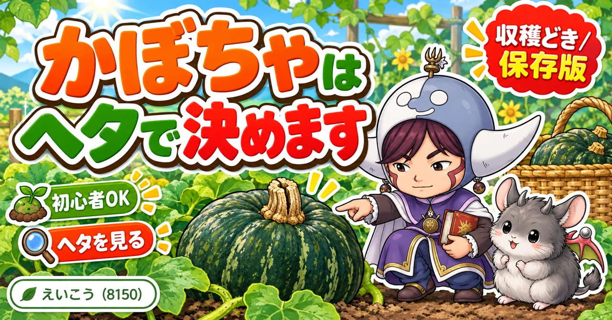
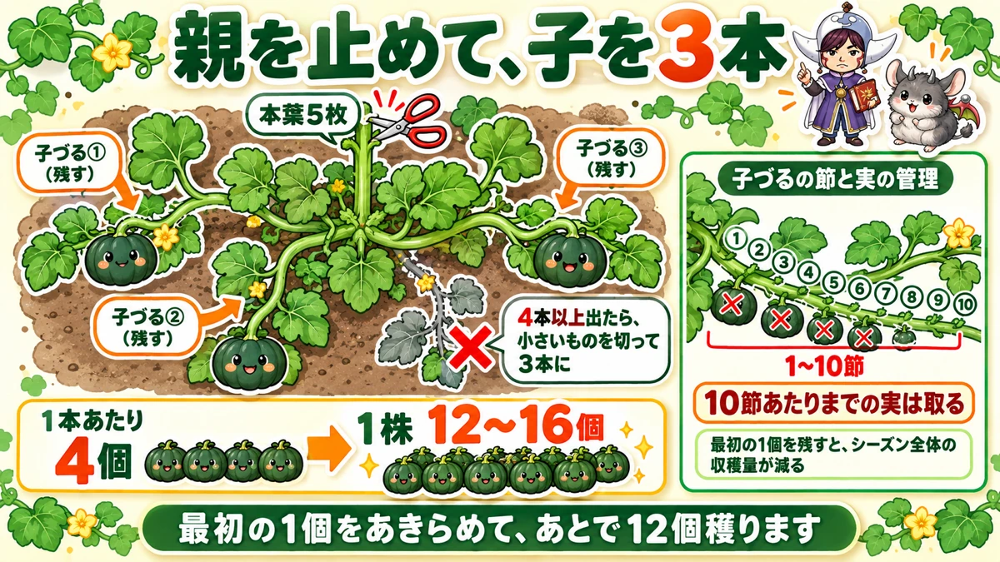
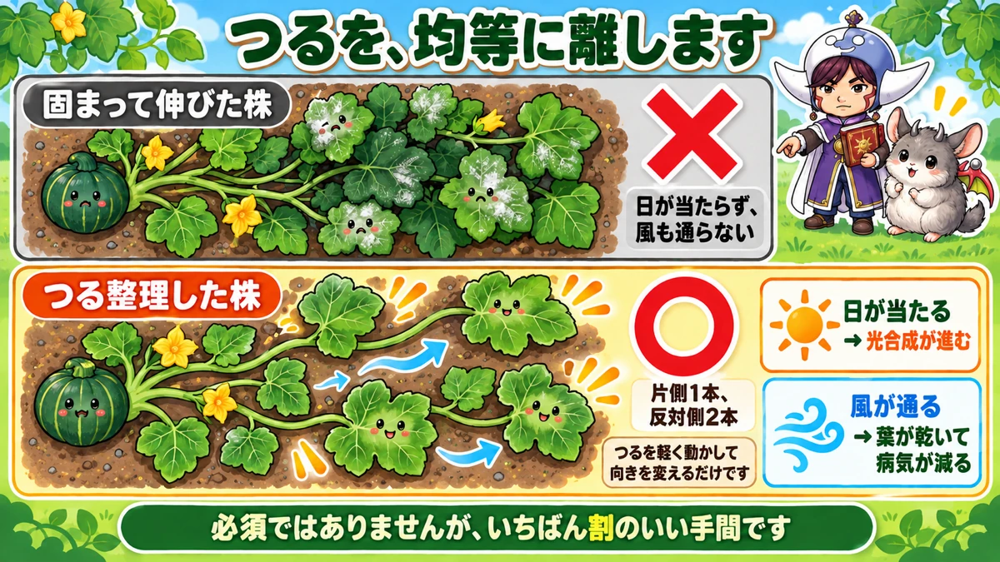
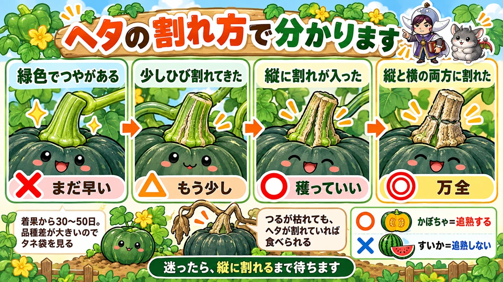

かぼちゃはヘタで決めます🎃 縦に割れたら、収穫していい

🎃「いつ穫ればいいのか、さっぱり分からない」
🎃「切ったら中がスカスカで、味も薄かった」
🎃「つるが伸び放題で、どうしていいか分からない」
どうも、8150（えいこう）です🌱 家庭菜園歴8年、理科の教員免許を持っていて、有機・無農薬で野菜を育てています。
前回は枝豆でした。今日はかぼちゃです。
かぼちゃは「植えたら勝手に育つ」と言われがちな野菜です。★半分は当たっていて、半分はちょっと違います。
先に、この記事でいちばん言いたいことを言っておきますね。
★かぼちゃの収穫は、日数ではなくヘタで決めます。
ヘタに★縦のひび割れが入ったら、穫っていい合図です🎃
まず、かぼちゃの基本データ
3つだけ押さえてください
- 科：ウリ科（きゅうり・すいか・ゴーヤ・ズッキーニの仲間。同じ場所は2〜3年あける）
- タネまき：3月下旬〜4月（ポットに加温して育てます）
- 植え付け：4月下旬〜5月（本葉4枚ごろ）
※時期は中間地（関東〜関西の平野部）が目安。寒い地域は少し遅らせ、暖かい地域は早めに。
株間は100cm
かぼちゃはとにかく場所を取ります。★株間1mは見ておいてください。
「そんなに空けるの？」と思うでしょうが、つるが伸びると本当にこれくらい要ります。★せまいと重なって、病気が出ます。
植えた直後は、不織布をかける
植えたては小さいので、風にも寒さにも虫にも弱いです。
★不織布をふわっとかけておくと、この3つが一度に片づきます。私はこれを「一石三鳥」と呼んでいます☺️
暖かくなって、つるが伸びはじめたら外します。
★親づるは、本葉5枚で止めます

数えて、切るだけ
やり方は単純です。
- 本葉を1枚、2枚、3枚…と数える
- ★5枚目のところで、先を切る
これで親づるが止まります。すると★付け根から子づるが伸びてきます。
子づるは、3本に絞る
しばらくすると、子づるが3本、4本と出てきます。
★残すのは3本です。4本以上出てきたら、いちばん小さいものを切ってください。
これを「子づる3本仕立て」といいます。★1本あたり4個ほど穫れるので、1株で12〜16個が目安です。
止めない方法もあります
正直に書いておくと、★親づるを止めない育て方もあります。
かぼちゃは親づるにも実がつくので、そのまま伸ばして穫る方も多いです。★どちらが正解ということはありません。
ただ、★管理はしやすくなります。伸ばす方向が3本に決まるので、どこに何があるか分かる。私は止めるほうを選んでいます。
★最初の実は、取ってください
10節あたりまでは、成らせない
ここが今日の落とし穴です。
早い時期に、子づるの根元近くに雌花が咲きます。実がつきます。うれしいですよね。
★でも、取ってください。
目安は★子づるの10節あたりまで。そこまでについた実は、もったいなくても取ります。
理由は、株の体力です
まだ株が小さいうちに実を成らせると、★そこに力を全部持っていかれます。
つるが伸びない。葉が増えない。★結果として、シーズン全体の収穫量が減ります。
最初の1個をあきらめて、★あとで12個穫る。そういう考え方です。前回の枝豆とも、ピーマンとも同じ話ですね。
私の失敗
私は3年目に、うれしくなって一番果を残しました。
その株は★最後まで小ぶりのまま、結局4個で終わりました。隣の株は10個を超えていたので、差がはっきり出ました😅
★つるを、均等に配置します

3本を、同じ方向に伸ばさない
子づる3本を、放っておくと同じ方向に固まって伸びます。
すると★葉が重なって、下の葉に日が当たりません。風も通りません。
片側1本、反対側2本
そこで、伸びる方向を人の手で決めてやります。
- ★片側に1本
- ★反対側に2本
- 3本ができるだけ均等に離れるように置く
これを★つる整理といいます。つるを軽く動かして向きを変えるだけです。
やると、病気が減ります
効果は地味ですが、確実です。
★日が当たる → 光合成が進む
★風が通る → 葉が乾く → うどんこ病が出にくい
かぼちゃで悩む病気といえば、白い粉をふいたようになるうどんこ病です。★あれは風通しでかなり変わります。
必須の作業ではありません。★でも余裕があるなら、いちばん割のいい手間だと思います。
★収穫は、ヘタを見ます

日数では、決められません
かぼちゃの収穫は、着果から30〜50日と言われます。★幅が広すぎますよね。
品種によってまるで違うからです。★正確に知りたい方は、タネ袋か苗のラベルを見てください。そこに書いてあります。
①実の見た目
まず分かりやすいのが、実の表情です。
- ★つやが消えて、くすんでくる
- ★色が濃く、黒っぽくなる
- ★模様がはっきりしてくる
ただ、これは慣れないと判断しにくいです。私も最初は分かりませんでした。
★②ヘタのひび割れ（これが本命）
いちばん確実なのが、実とつるをつないでいる部分です。★ヘタ、専門用語では果梗（かこう）といいます。
ここを見てください。段階があります。
- ★緑色でつやがある … まだ早い
- ★少しひび割れてきた … もう少し
- ★縦に割れが入った … 穫っていい
- ★縦と横の両方に割れた … 万全です
★迷ったら「縦に割れるまで待つ」。これだけ覚えて帰ってください。
早採りしても、追熟します
ここがかぼちゃのありがたいところ。
★かぼちゃは追熟します。収穫してから甘くなります。
すいかは追熟しないので、早採りしたら早採りのままです。★かぼちゃは、少し早くても後から挽回できます。
ただし★保存したいなら、しっかり完熟で採ったほうが傷みにくいです。長く置くつもりなら、横割れまで待ってください。
つるが枯れても、捨てないで
最後にこれを。
夏の終わり、つるが枯れてしまうことがあります。「もうだめだ」と思いますよね。
★ヘタにひび割れが入っていれば、収穫して追熟すれば食べられます。
つるが枯れた＝実もだめ、ではありません。★まずヘタを見てください。
学ぶ：あの割れ目は、切り離す準備です🔬
なぜヘタが割れるのか
ではなぜ、完熟するとヘタが割れるのでしょうか。
★あれは、株が実を手放す準備をしているからです。
水の通り道を、閉じている
実が育っているあいだ、ヘタは★水と栄養の通り道です。
そして実が完成すると、植物はその通り道を閉じにかかります。★中の細胞が硬くなって、コルクのような層に変わります。
コルクは水を通しません。縮みます。★だから、表面がひび割れる。
つまり「終わりました」の合図
ここまで来ると、意味が変わって見えます。
あのひび割れは、傷でも劣化でもありません。★株からの「この実はもう完成しました」という合図です。
だから収穫の目印になるわけですね。
実物で確かめられます
これ、比べると一発で分かります。
★育ちかけの実と、完熟した実のヘタを並べて見てください。かたや緑でみずみずしく、かたや茶色く硬い。
同じ部分とは思えません。★理屈で覚えるより、この1回のほうが残ります☺️
まとめ
ここまで読んでくださって、ありがとうございます！
- ★かぼちゃはウリ科。株間100cm、植え付けは4月下旬〜5月
- ★植えた直後は不織布。防風・防寒・虫よけの一石三鳥
- ★親づるは本葉5枚で摘心して、子づるを3本に絞る
- ★1本あたり4個、1株で12〜16個が目安
- ★親づるを止めない育て方もある。どちらでもよい
- ★子づる10節あたりまでの実は取る
- ★最初の1個を残すと、シーズン全体の収穫量が減る
- ★子づる3本は、片側1本・反対側2本に離す（つる整理）
- ★重ならなければ、うどんこ病が減る
- ★収穫は日数より、ヘタのひび割れで決める
- ★縦に割れたら適期、横も割れたら万全
- ★かぼちゃは追熟する。すいかは追熟しない
- ★保存するなら完熟で採る
- ★つるが枯れても、ヘタが割れていれば食べられる
- ★あの割れ目は、株が実を切り離す準備
全部やろうとしなくて大丈夫です。まずは★畑にあるかぼちゃのヘタを1つ、見てみてください。緑かどうか、割れているかどうか。それだけで収穫日が決まります🎃
次回は、オクラの話です。★1日で穫りごろが過ぎてしまう野菜のお話をします🌿
敷きわら
実が土に触れていると傷みます。つるの下に敷いておくと、泥はねも防げます。
![[商品価格に関しましては、リンクが作成された時点と現時点で情報が変更されている場合がございます。]](https://hbb.afl.rakuten.co.jp/hgb/56bc2fb2.ff40a6e6.56bc2fb3.618f6a70/?me_id=1257026&item_id=10000211&pc=https%3A%2F%2Fthumbnail.image.rakuten.co.jp%2F%400_mall%2Fsharuka%2Fcabinet%2F09042254%2Fimgrc0081094692.jpg%3F_ex%3D240x240&s=240x240&t=picttext "[商品価格に関しましては、リンクが作成された時点と現時点で情報が変更されている場合がございます。]")

収穫バサミ
ヘタが硬いので、手ではもげません。コルク状のひび割れを見てから切ります。
![[商品価格に関しましては、リンクが作成された時点と現時点で情報が変更されている場合がございます。]](https://hbb.afl.rakuten.co.jp/hgb/56d22030.def85fa7.56d22031.b89fde86/?me_id=1250472&item_id=10022339&pc=https%3A%2F%2Fthumbnail.image.rakuten.co.jp%2F%400_mall%2Fplantz%2Fcabinet%2F01%2Ft-13.jpg%3F_ex%3D240x240&s=240x240&t=picttext "[商品価格に関しましては、リンクが作成された時点と現時点で情報が変更されている場合がございます。]")
液体肥料
つるが伸びきったあと、実を太らせる時期に効きます。早すぎるとつるぼけします。
![[商品価格に関しましては、リンクが作成された時点と現時点で情報が変更されている場合がございます。]](https://hbb.afl.rakuten.co.jp/hgb/56bc2da1.2bf36c6e.56bc2da2.7b66fad7/?me_id=1347284&item_id=10000008&pc=https%3A%2F%2Fthumbnail.image.rakuten.co.jp%2F%400_mall%2Fmandahakko%2Fcabinet%2Fsyokubutsumanda%2F260306_smn_amn5004.jpg%3F_ex%3D240x240&s=240x240&t=picttext "[商品価格に関しましては、リンクが作成された時点と現時点で情報が変更されている場合がございます。]")
あわせて読みたい